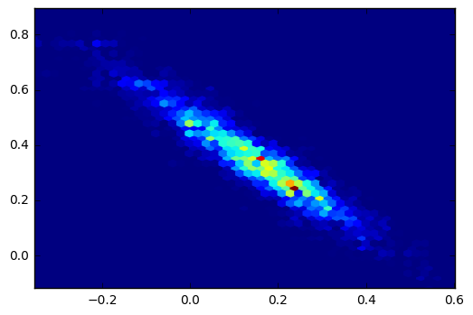

Lasso regression with block updating¶
Sometimes, it is very useful to update a set of parameters together. For example, variables that are highly correlated are often good to update together. In PyMC 3 block updating is simple, as example will demonstrate.
Here we have a LASSO regression model where the two coefficients are strongly correlated. Normally, we would define the coefficient parameters as a single random variable, but here we define them separately to show how to do block updates.
First we generate some fake data.
In [1]:
%pylab inline
from matplotlib.pylab import *
from pymc3 import *
import numpy as np
d = np.random.normal(size=(3, 30))
d1 = d[0] + 4
d2 = d[1] + 4
yd = .2*d1 +.3*d2 + d[2]
Populating the interactive namespace from numpy and matplotlib
Then define the random variables.
In [2]:
lam = 3
with Model() as model:
s = Exponential('s', 1)
tau = Uniform('tau', 0, 1000)
b = lam * tau
m1 = Laplace('m1', 0, b)
m2 = Laplace('m2', 0, b)
p = d1*m1 + d2*m2
y = Normal('y', mu=p, sd=s, observed=yd)
For most samplers, including Metropolis and HamiltonianMC, simply pass a list of variables to sample as a block. This works with both scalar and array parameters.
In [4]:
with model:
start = find_MAP()
step1 = Metropolis([m1, m2])
step2 = Slice([s, tau])
trace = sample(10000, [step1, step2], start=start)
Optimization terminated successfully.
Current function value: 52.260224
Iterations: 15
Function evaluations: 23
Gradient evaluations: 23
100%|██████████| 10000/10000 [00:14<00:00, 688.86it/s]
In [5]:
traceplot(trace);

In [6]:
hexbin(trace[m1],trace[m2], gridsize = 50)
Out[6]:
<matplotlib.collections.PolyCollection at 0x1141ed208>
